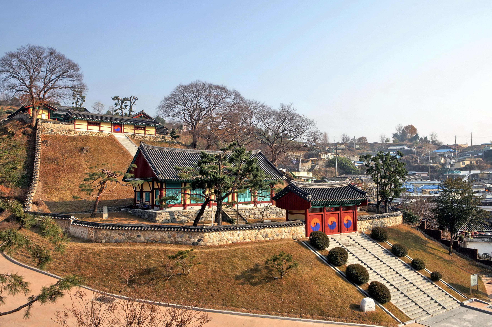
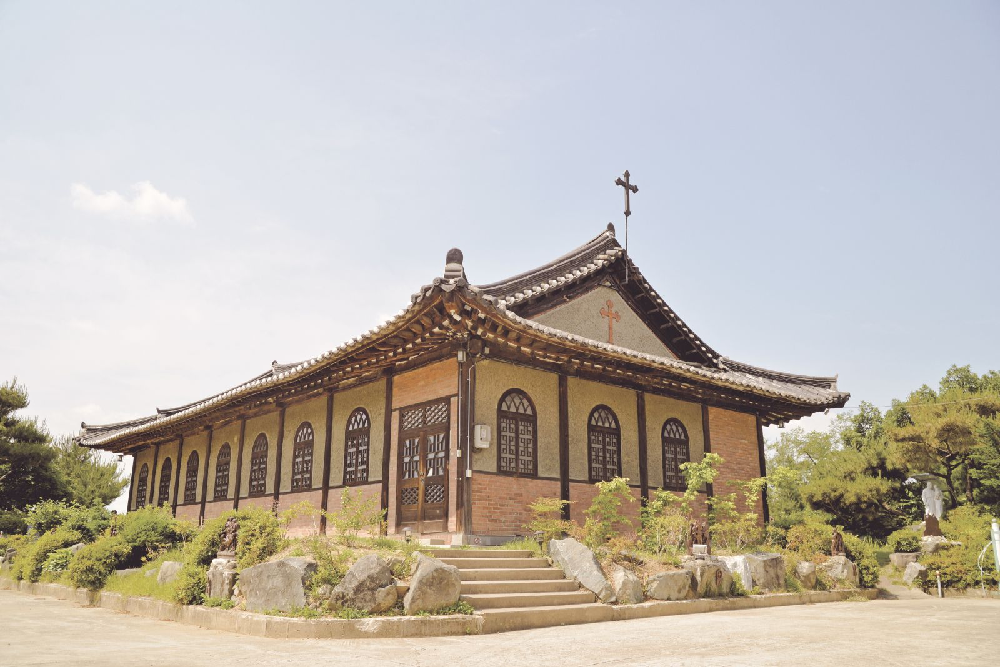
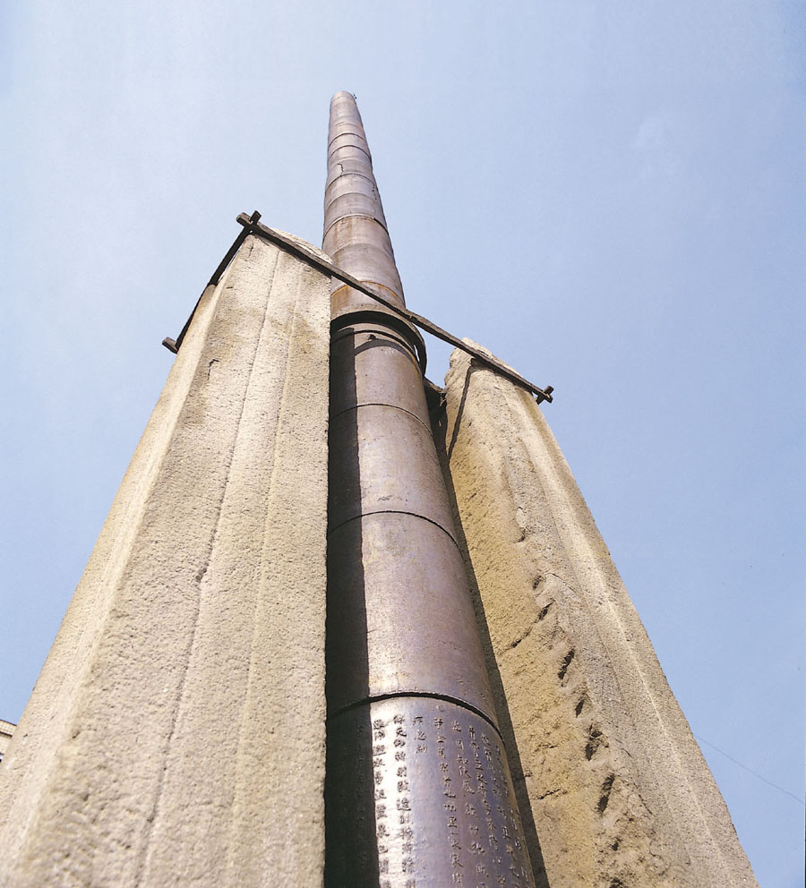
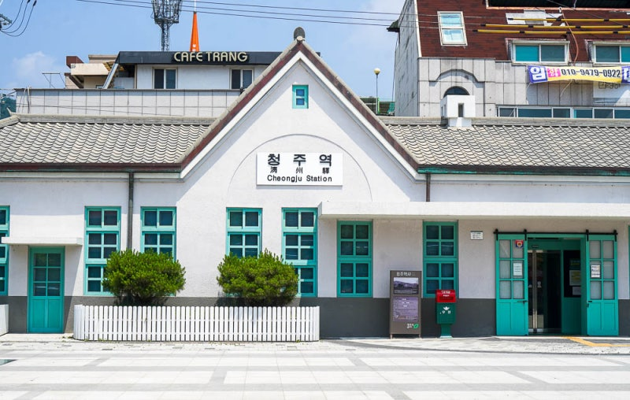

기록은 거대한 보존이 아니라,
한 사람의 시선에서 시작된다.
청주의 사라져가는 유산을 디지털로 기록하는 청석고등학교 학생 주도 아카이브 프로젝트. 네 곳의 장소, 천 년의 시간, 그리고 한 도시의 정체성에 대한 기록.
도시는 자신을 끊임없이 다시 씁니다. 그러나 지워진 페이지들은 누군가 옮겨 적기 전까지는 다시 펼쳐지지 않습니다.
Cheongju Archive는 청주의 풍경 속에 겹겹이 쌓여 있는 시간을 디지털로 옮겨 적는 프로젝트입니다. 고려에서 시작된 시간이 조선과 근대를 지나, 지금 우리의 발 밑에 닿아 있다는 사실을 다음 세대가 한눈에 마주할 수 있는 입구를 만드는 것이 이 프로젝트의 목적입니다.
우리가 남기는 사진과 영상은 단순한 자료가 아닙니다. 도시의 자기 인식이 어디에서 만들어지고, 무엇을 잃어가고 있는지를 묻는 작은 거울입니다. 기록은 거대한 보존 사업이 아니라, 한 명의 학생이 자신이 사는 도시를 천천히 들여다본 행위로부터 시작됩니다.
Cheongju Archive가 기록한 네 장소는 서로 다른 시대, 서로 다른 가치관, 서로 다른 건축 언어를 품고 있습니다. 그러나 한 도시의 단면을 함께 이루고 있습니다.
청주향교 — 지방 교육의 마루를 놓은 자리. 6동의 건물이 학문(明倫堂)과 제향(大成殿)을 나란히 배치합니다.
수동성당 — 한옥 처마와 서양식 예배 공간이 한 지붕 아래 공존하는 근대 건축의 진귀한 사례.
용두사지 철당간 — 사라진 사찰의 자리에 남은 천 년의 쇠기둥. 국보 41호.
옛 청주역 — 충북선의 첫 정거장이자, 비워진 자리가 다시 공원이 된 도시 기억의 풍경.
조선 지방 교육의 마루를 걷다.

고려와 조선의 지방 사회에서 향교는 단순한 학교가 아니었습니다. 유교적 윤리와 학문, 그리고 지역 공동체의 의례가 함께 자라던 살아있는 교실이었습니다. 청주향교는 그 시대의 호흡을 가장 잘 보여주는 청주의 정신적 좌표입니다.
한옥의 처마 아래로, 서양의 종소리가 내려앉다.

1935년, 청주 한복판에 한옥과 서양식이 절묘하게 만나는 성당이 세워졌습니다. 한국인의 풍토 위에 서구의 신앙을 새기려 했던 초기 성공회 선교사들의 토착화 의지가 한 채의 건축으로 응축된, 한국 근대건축사의 작은 사건입니다. 외벽은 벽돌과 콘크리트, 내벽은 석회로 마감되었고, 팔작지붕에 한식 기와를 얹었습니다.
962년부터, 지금 이 거리에.

용두사지 철당간은 고려 광종 13년, 서기 962년에 세워졌습니다. 사찰은 사라졌지만, 13.1미터의 쇠기둥은 도시의 중심에 그대로 남아 천 년의 시간을 지키고 있습니다. 당간 아래쪽 철통에는 해서체로 새겨진 명문이 있고, 그 안에는 고려가 독자적으로 사용한 연호 '준풍(峻豊)' 이 적혀 있습니다.
사라진 철길 위에 다시 세운 풍경.

1921년 11월 1일, 충북선의 시작과 함께 청주역은 도시의 관문이 되었습니다. 그러나 시가지는 자라났고 철길은 두 번 옮겨졌습니다 — 1968년 우암동으로, 1980년 현재 위치로. 비워진 자리는 2017년 12월, 청주역사공원이라는 이름으로 다시 시민의 일상에 들어섰습니다.
고려에서 시작된 시간이 조선과 근대를 지나 지금 우리의 발 밑에 닿아 있습니다. Cheongju Archive가 기록한 네 장소를 시간 순으로 펼치면, 한 도시의 이력서가 됩니다.
Cheongju Archive는 거창한 장비나 기관 자원 없이 만들어졌습니다. 한 명의 고등학생이 답사하고, 직접 촬영하고, 손으로 정리한 기록입니다.
4개 장소를 직접 방문해 외관과 내부, 주변 풍경을 사진과 드론 영상으로 촬영했습니다. 문화재청 및 위키백과의 1차 자료를 참고해 문화재 지정 번호, 건립 연도, 구조 정보를 검증했습니다.
Apple의 미니멀리즘을 기반으로, 흰 배경·넓은 여백·SF Pro/Pretendard 타이포그래피·미세한 그라데이션 포인트를 활용해 아카이브의 무게감과 가독성을 동시에 추구했습니다. 모든 측정값은 clamp() 로 처리해 모바일과 데스크탑에서 동일한 균형을 유지합니다.
이 아카이브를 만들면서 가장 자주 마주친 감정은 '느림'이었습니다. 향교 마루의 결을 한 번 쓸어보고, 성당 종소리를 한 번 듣고, 철당간 그림자를 따라 한 번 돌아보는 데 걸리는 시간 — 그 시간이 도시를 이해하는 가장 정확한 단위라는 사실을 알게 되었습니다.
교육과 사회과학을 진로로 삼고자 하는 학생으로서, 이 프로젝트는 단순한 코딩 연습이 아니라 '한 도시가 자신을 어떻게 이해하는가' 라는 사회학적 질문을 던지는 작업이었습니다. 이 사이트가 다른 학생들에게 '내가 사는 도시도 이렇게 들여다볼 수 있다' 는 작은 시작점이 되기를 바랍니다.
© 2026 Cheongseok High School Archive Project. All rights reserved.
본 보고서의 사진과 텍스트는 학생 주도 비영리 학습 목적으로 사용되었습니다.